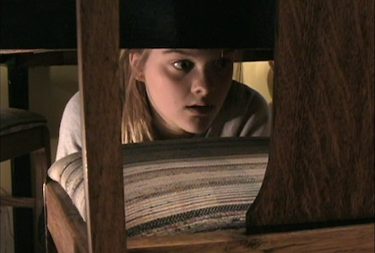

Films
I Perceive
2007
9:13 minutes
Written & directed by Chloe Hung
Cast: Sarah Clark, Michael Kaufman, Mary Sue Rankin, Betty Chee, Jon Palmer, Marius Jaensch. Winner: Best Conceptual Film, 2008 Toronto Student Film Festival, presented by the Toronto International Film Festival.
Cast: Sarah Clark, Michael Kaufman, Mary Sue Rankin, Betty Chee, Jon Palmer, Marius Jaensch. Winner: Best Conceptual Film, 2008 Toronto Student Film Festival, presented by the Toronto International Film Festival.
A father and mother are wrapped in a cocoon where nothing exists unless it's reflected on the news, even when their daughter brings a terrible reality right through their doors.
Drowning Sorrow
2006
9:18 minutes
Co-written and co-directed with Maryam Khalid
Camera: Maryam Khalid Edited by Chloe Hung
Starring Lydia Beck, Sarah Clark, Michael Kaufman Finalist: 2007 Toronto Student Film Festival, presented by the Toronto International Film Festival.
Camera: Maryam Khalid Edited by Chloe Hung
Starring Lydia Beck, Sarah Clark, Michael Kaufman Finalist: 2007 Toronto Student Film Festival, presented by the Toronto International Film Festival.
A young girl, grappling with the drowning of her sister, struggles to cope with her increasing abusive father. Her own life is threatened when she discovers that her sister's death was no accident.
